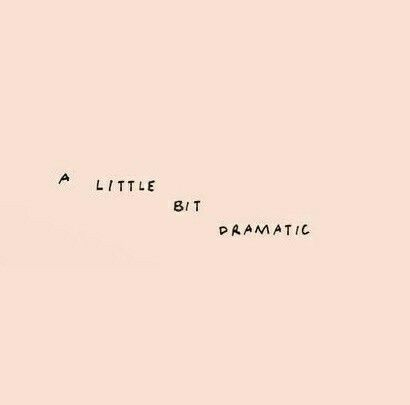

Jacob Jackson
Character Sheet
╭━━━━━━━━━━━━━━━━╮
Trigger Warnings
None really. Might change this.
His past has trigger warnings, but it is mostly just the backstory
╰━━━━━━━━━━━━━━━━╯
Contents
I. Teaser
II. Basic info
III. Health and Abilities
IV. Appearance
V. Personality
VI. Self Perception
VII. Relations
VIII. Roleplay Info

“The rarer someone's smile, the more special-er it is.”
Teaser
“When my father walked out that door,
I swore I would never leave those close to me.
Nobody deserves that pain.”
Basic Info
Birth Name
Jacob Isaac Jackson
Current Name
Jacob Isaac Jackson
First Name
Jacob
Meaning
Holder of the heel or supplanter
Middle Name
Isaac
Meaning
He will laugh, he will rejoice
Last Name
Jackson
Meaning
Son of Jack, God has been gracious
Nicknames
He would love for Jake to be his nickname, but he's always around Sam who never uses nicknames, so it never caught on. But he would love nicknames, nobody has given him any
Biological Gender
Male
Preferred Gender
Agender
Pronouns
He's fine with being referred to as anything. It does not offend him. He looks more masculine, so most refer to him with masculine pronouns, but he's fine with they/them or ever she/her. He does dress femininely sometimes, he doesn't categorize genders.
Sexual Orientation
Gay
Romantic Orientation
Gay
Age
17 to 22 depending on the rp
Default 22
Birthday
July 8th
Zodiac Sign
Cancer
Occupation
Singer / Songwriter
Actor
Where they live
Prismoria
Languages
English

“Oh, you love me. You wouldn't dare hurt an innocent little cutie~”
Health and Abilities
Physical Illnesses
Dwarfism
Mental Illnesses
None (Maybe PTSD)-
Triggers
SA/Depression, abandonment, Being trapped, cannibalism
Mutation / Power
Time Manipulation
How long have they had it
About 12 years
How do they use it (If it's a power)
Teleportation, pulling pranks
What are the limitations (If it's a power)
It takes a lot of effort and often gives him a headache. Stopping the entire universe from continuing on is pretty difficult
“Revenge is always ten times worse~”
Appearance
Height
4'8"
142.24 cm
Weight
98 lbs.
44.45 kg
Skin color
Warm ivory
Hair color
Caramel Brown
Hair style
Wavy and messy
Eye color(s)
Vivid blue
(as said in the credits, Grian is the perfect representation of him with the eye color being the only incorrect part)
Piercings (If any)
Ear piercings
He wears a dangling gold star earing on his right ear
Scars (If any)
None
Tattoos (If any)
None
Birthmark (If any)
None
Freckles
Yes
Where
Arms and the bridge of his nose
Accent / Voice
He has a very melodic and enchanting voice. He is a singer after all, he chose that career for a reason
“What's the point of living if you don't go wild over the tiniest things?”
Personality
Closest Stereotype
That over-energetic guy who's always happy
Overall Description
Jacob is a 'lil ball of sunshine, always trying to cheer people up. If you are sad, he won't try to fix the problem, because not everything needs to be fixed, he'll just offer you the comfort and attention you need. This is a pure and wholesome boi who will do anything for his friends. However, Jacob is a force of nature, he cannot be stopped. He is very mischievous and always pulling pranks to get a reaction.
Jacob is strangely good at reading others. He can look at someone and recite, down to a percentage, what they are feeling. But, he isn't doing this all the time. It's a result of something that happened with Sam, something he vowed to never let happen again.
Likes
Making people smile and joking around
Music and performing. His father used to play guitar with him, his father was his role model. Until said father ditched after being told that his son was gay. But, Jacob still loves music none-the-less.
Teasing people
Dislikes
People who are too serious or try to mask their feelings
Being alone, he always wanted to be with someone else
Silence
Positive Traits
Charming and playful. He is basically a force of nature. If he wants something, he can and will get it because he just knows how to play people. Often, all he really wants is to have fun and make others happy though.
Loyal. He will never leave a friend. If a friendship falls apart, it's because the other person left, not the other way around.
Musically talented
Negative Traits
He is very annoying. He never runs out of things to say or do, and he never runs out of energy. It is impossible to keep up with him.
Overly-trusting
Easily distracted
Fears
Losing those he cares about. That's why he's so good at reading feelings, he learned how to do that because he was worried about his friend with depression who was amazing at hiding his pain. He needed to be able to tell when that friend needed help. He can't bear the thought of losing someone close like that again
Losing touch with who he is. Changing so much that he doesn't recognize the person staring back at him in the mirror
Losing hope. As long as he has even a little bit of hope, he can go on, but if he doesn't have any more hope, there really is no point in living
Hobbies
Singing - His father was a singer, and he always looked up to his father as a kid. He used to watch all his shows and concerts on this old, box tv.
Playing the guitar - His father taught him how to play guitar. They would sometimes play together
Acting - Musicals were some of the first places he was able to sing or perform in front of a crowd. He also managed to drag Jay into musicals and plays.
Love Language(s)
Quality Time: This love language is all about giving your undivided attention to that one special person, without the distraction of television, phone screens, or any other outside interference. They have a strong desire to actively spend time with their significant other, having meaningful conversations or sharing recreational activities.
Physical Touch: People who communicate their appreciation through this language, when they consent to it, feel appreciated when they are hugged, kissed, or cuddled. They value the feeling of warmth and comfort that comes with physical touch.
Extra
He will do anything to make someone smile if he finds them interesting or could use some cheering up. He doesn't give up easily. The guy spent 3 full years trying to get one guy to just say one word to him, then another 3 years trying to help him heal from past trauma and be happier in general. He is determined.
“... We've all lost someone close to us, even... Even the ones we think can never leave.”
Self-Perception
How they feel about themselves
Jacob is confident in his own abilities. He has no problems with his looks. This isn't to say he has no problems.
How they would describe themselves
Confident, outgoing, playful, fun to be around
What they think is their best trait
His loyalty
What they think is their worst trait
He can be a bit much to handle. There is just a lot of energy pent up inside of him.
How they think other perceive them
An outgoing, if not annoyingly energetic, cheerful person
What they would like to change about themselves
His past

“Want to play a game~?”
Relations
Mother
Ally Kane
Status
Deceased
Father
Keven Jackson
Status
Alive but estranged
Ex-Lover
Status
Alive (?) He lives in an unknown state of living
Best Friend
Status
Alive

“You're beautiful in your own way, so just be you.
The point of life is to be happy,
not to spend it all trying to meet everyone's expectations.”
Roleplay Info
Availability
Open
I may have to pair him with another oc to bounce off of. I haven't done many (or any) rps with Jacob as my main.
Genres
Fantasy
Angst
Sci-Fi
Romance